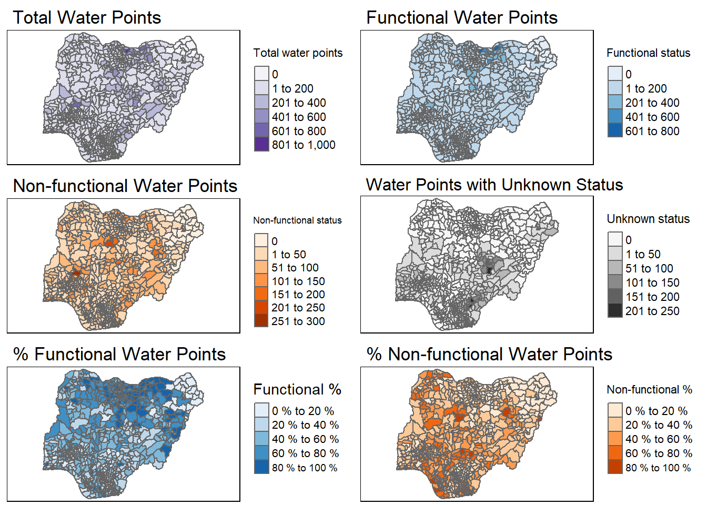
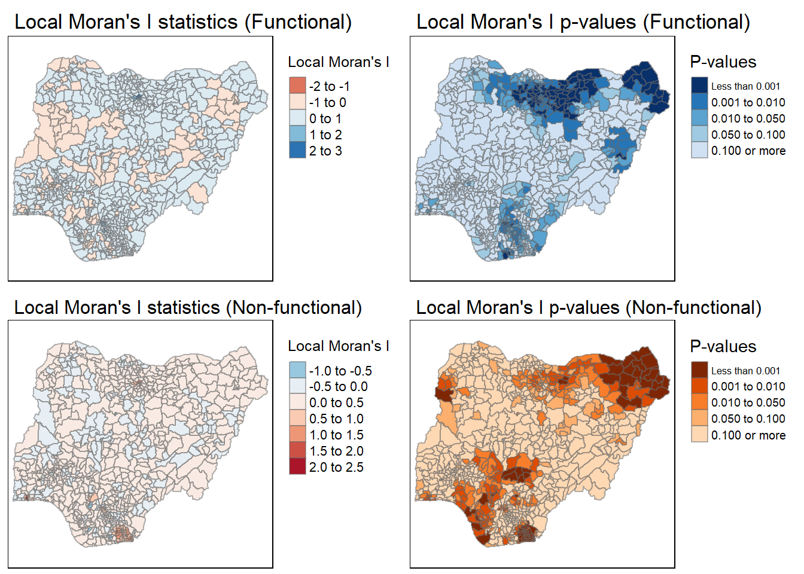
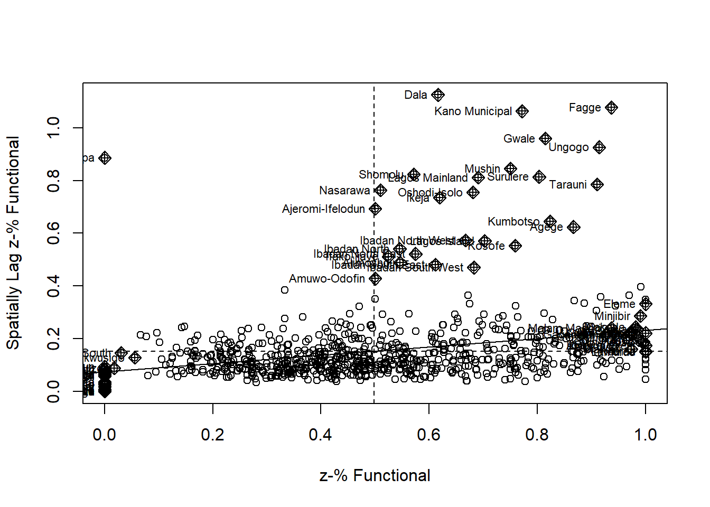
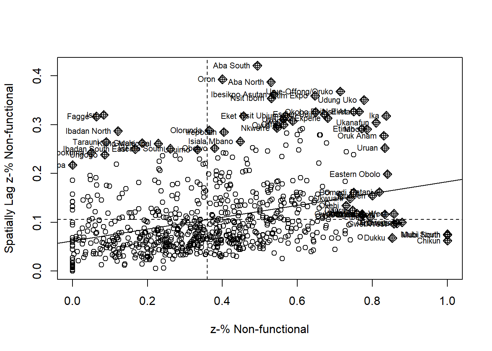
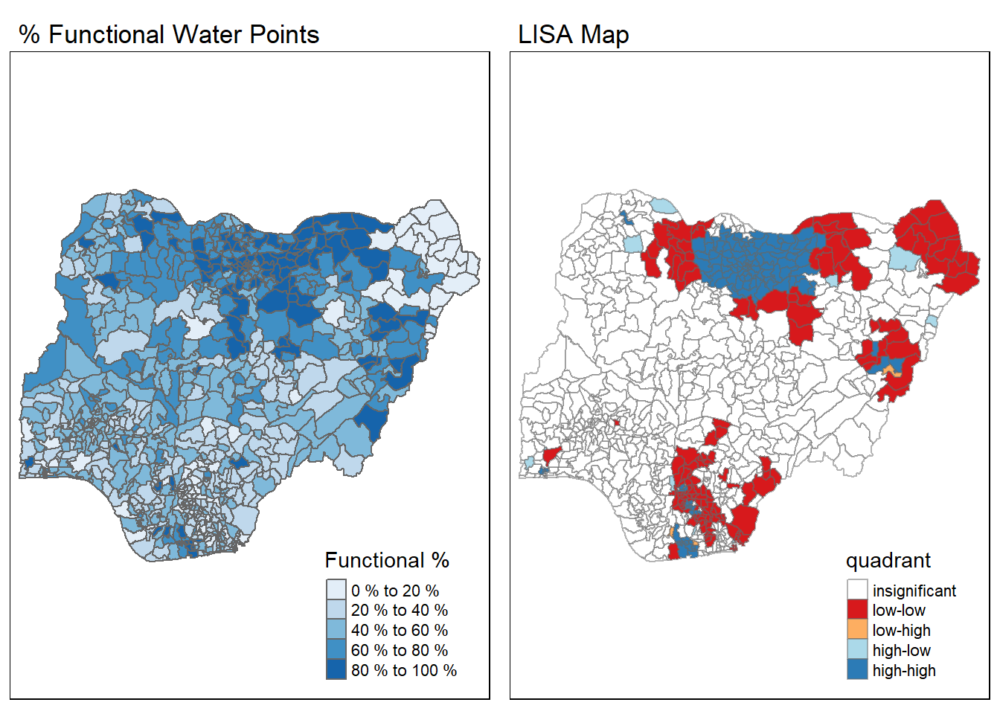
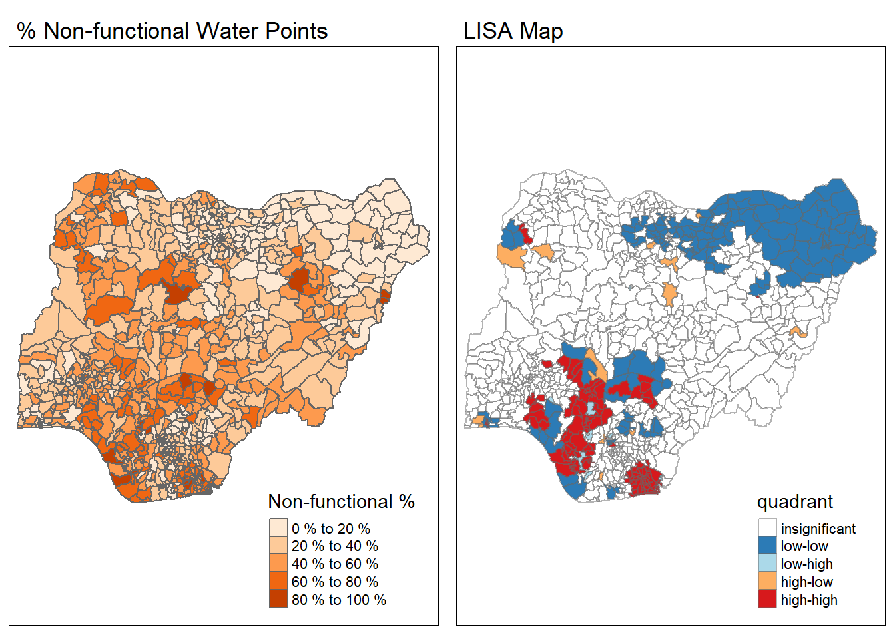
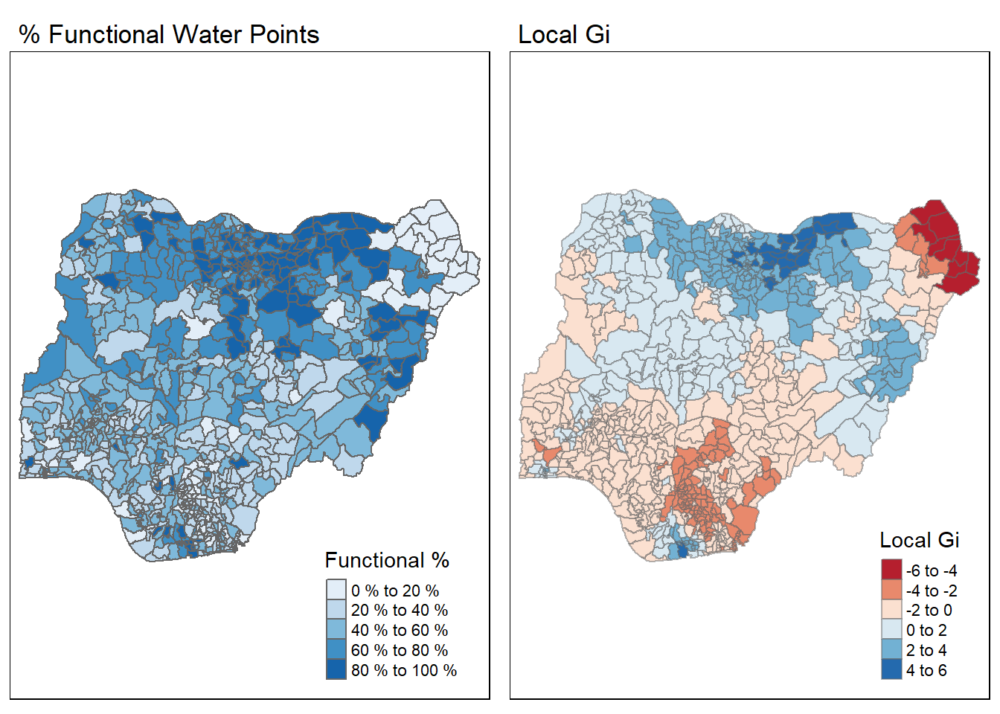
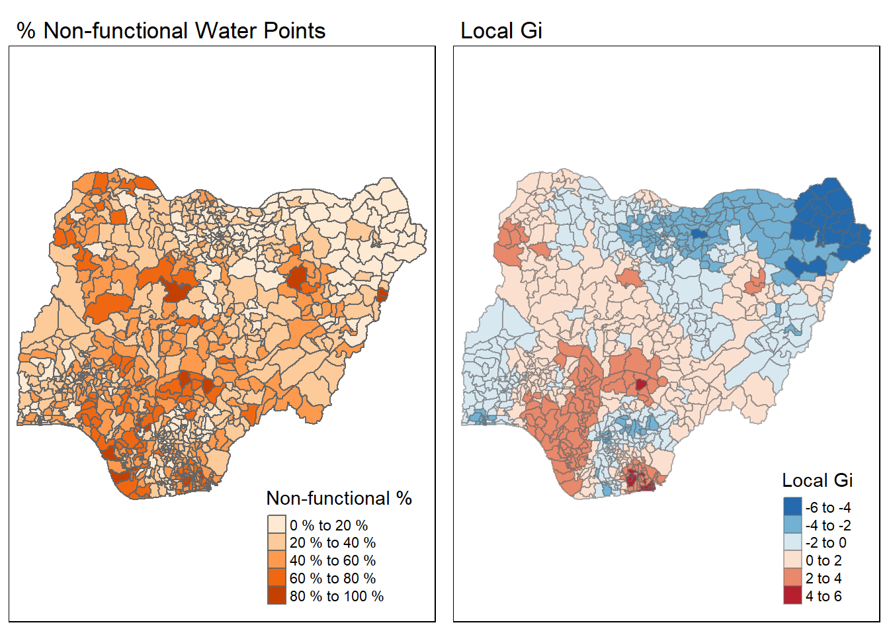

pacman::p_load(sf, spdep, tmap, tidyverse, funModeling)Take-home Exercise 1
Geospatial Analytics for Social Good
Objective
To reveal the geospatial patterns of Functional and Non-functional water points in Nigeria using global and local spatial association techniques.
Loading R Packages
Importing Data into R
The Data
ESRI shapefile data of Nigeria showing Level-2 Administrative (or Local Government Area, LGA) boundary was obtained from geoBoundaries:

Water point data in CSV format was obtained from WPdx data repository:

As the size of the CSV file has exceeded the GitHub limitation of 100 MB, it shall not be included in the Commit and Push to GitHub and Netlify. The wrangled data derived from the following steps for the subsequent geospatial analysis will be exported as a RDS file, and this will be pushed to GitHub and Netlify instead.
Importing Nigeria Shapefile
nigeria_sf <- st_read(dsn="data/Nigeria", layer="geoBoundaries-NGA-ADM2")Reading layer `geoBoundaries-NGA-ADM2' from data source
`D:\SMU\ISSS624 - Applied Geospatial Analytics\exercises\leecheetian\ISSS624\Take-home_Ex\Take-home_Ex1\data\Nigeria'
using driver `ESRI Shapefile'
Simple feature collection with 774 features and 5 fields
Geometry type: MULTIPOLYGON
Dimension: XY
Bounding box: xmin: 2.668534 ymin: 4.273007 xmax: 14.67882 ymax: 13.89442
Geodetic CRS: WGS 84plot(nigeria_sf)
glimpse(nigeria_sf)Rows: 774
Columns: 6
$ shapeName <chr> "Aba North", "Aba South", "Abadam", "Abaji", "Abak", "Abaka…
$ Level <chr> "ADM2", "ADM2", "ADM2", "ADM2", "ADM2", "ADM2", "ADM2", "AD…
$ shapeID <chr> "NGA-ADM2-72505758B79815894", "NGA-ADM2-72505758B67905963",…
$ shapeGroup <chr> "NGA", "NGA", "NGA", "NGA", "NGA", "NGA", "NGA", "NGA", "NG…
$ shapeType <chr> "ADM2", "ADM2", "ADM2", "ADM2", "ADM2", "ADM2", "ADM2", "AD…
$ geometry <MULTIPOLYGON [°]> MULTIPOLYGON (((7.401109 5...., MULTIPOLYGON (…Transforming to EPSG 26393 Map Projection
nigeria26393 <- st_transform(nigeria_sf, crs = 26393)
nigeria26393Simple feature collection with 774 features and 5 fields
Geometry type: MULTIPOLYGON
Dimension: XY
Bounding box: xmin: 21379.36 ymin: 33072.08 xmax: 1347569 ymax: 1105146
Projected CRS: Minna / Nigeria East Belt
First 10 features:
shapeName Level shapeID shapeGroup shapeType
1 Aba North ADM2 NGA-ADM2-72505758B79815894 NGA ADM2
2 Aba South ADM2 NGA-ADM2-72505758B67905963 NGA ADM2
3 Abadam ADM2 NGA-ADM2-72505758B57073987 NGA ADM2
4 Abaji ADM2 NGA-ADM2-72505758B61968000 NGA ADM2
5 Abak ADM2 NGA-ADM2-72505758B39432389 NGA ADM2
6 Abakaliki ADM2 NGA-ADM2-72505758B36739173 NGA ADM2
7 Abeokuta North ADM2 NGA-ADM2-72505758B86358915 NGA ADM2
8 Abeokuta South ADM2 NGA-ADM2-72505758B56925175 NGA ADM2
9 Abi ADM2 NGA-ADM2-72505758B1616690 NGA ADM2
10 Aboh-Mbaise ADM2 NGA-ADM2-72505758B78555816 NGA ADM2
geometry
1 MULTIPOLYGON (((544450.6 12...
2 MULTIPOLYGON (((537055.1 12...
3 MULTIPOLYGON (((1254969 104...
4 MULTIPOLYGON (((510382.6 58...
5 MULTIPOLYGON (((590092.2 12...
6 MULTIPOLYGON (((657693.7 25...
7 MULTIPOLYGON (((73280.55 38...
8 MULTIPOLYGON (((90286.32 35...
9 MULTIPOLYGON (((628834.8 21...
10 MULTIPOLYGON (((535932.4 15...Importing Water Points Aspatial Data
nigeria_csv <- read_csv("data/WPdx+/Water_Point_Data_Exchange_-_Plus__WPdx__.csv") %>%
filter(`#clean_country_name` == "Nigeria")Converting to simple feature data frame and transforming to same map projection
nigeria_wp_sf <- st_as_sf(nigeria_csv,
coords = c("#lon_deg", "#lat_deg"),
crs = 4326) %>%
st_transform(crs = 26393)Data Wrangling
Recoding NA values into string
Recoding all NA values in #status_clean column into “Unknown”:
nigeria_wp <- nigeria_wp_sf %>%
mutate(`#status_clean` = replace_na(`#status_clean`, "Unknown"))EDA
Listing all values in #status_clean column:
freq(data = nigeria_wp, input = "#status_clean")Extracting Water Points Data
Extracting functional water points
wp_functional <- nigeria_wp %>%
filter(`#status_clean` %in% c("Functional",
"Functional but needs repair",
"Functional but not in use"))Extracting non-functional water points
wp_nonfunctional <- nigeria_wp %>%
filter(`#status_clean` %in% c("Non-Functional",
"Non-Functional due to dry season",
"Non functional due to dry season",
"Abandoned/Decommissioned",
"Abandoned"))Extracting water points with Unknown class
wp_unknown <- nigeria_wp %>%
filter(`#status_clean` == "Unknown")Performing Point-in-Polygon Count
wp_nigeria <- nigeria26393 %>%
mutate(`Total water points` = lengths(
st_intersects(nigeria26393, nigeria_wp))) %>%
mutate(`Functional status` = lengths(
st_intersects(nigeria26393, wp_functional))) %>%
mutate(`Non-functional status` = lengths(
st_intersects(nigeria26393, wp_nonfunctional))) %>%
mutate(`Unknown status` = lengths(
st_intersects(nigeria26393, wp_unknown))) %>%
mutate(`Functional %` = ifelse(`Total water points` > 0,
`Functional status` / `Total water points`,
0)) %>%
mutate(`Non-functional %` = ifelse(`Total water points` > 0,
`Non-functional status` / `Total water points`, 0))wp_nigeriaSaving the Analytical Data Table
The data derived above is saved as a RDS file for subsequent geospatial analysis of the water points:
write_rds(wp_nigeria, "data/rds/wp_nigeria.rds")Visualizing the Spatial Distribution of Water Points
wp_nigeria <- read_rds("data/rds/wp_nigeria.rds")
total <- qtm(wp_nigeria, "Total water points", fill.palette = "Purples") +
tm_layout(main.title = "Total Water Points",
main.title.size = 1.1,
legend.outside = TRUE)
wp_functional <- qtm(wp_nigeria, "Functional status", fill.palette = "Blues") +
tm_layout(main.title = "Functional Water Points",
main.title.size = 1.1,
legend.outside = TRUE)
wp_nonfunctional <- qtm(wp_nigeria, "Non-functional status", fill.palette = "Oranges") +
tm_layout(main.title = "Non-functional Water Points",
main.title.size = 1.1,
legend.outside = TRUE)
unknown <- qtm(wp_nigeria, "Unknown status", fill.palette = "Greys") +
tm_layout(main.title = "Water Points with Unknown Status",
main.title.size = 1.0,
legend.outside = TRUE)
pct_functional <- qtm(wp_nigeria, "Functional %", fill.palette = "Blues") +
tm_layout(main.title = "% Functional Water Points",
main.title.size = 1.1,
legend.outside = TRUE,
legend.format = list(fun=function(x) paste0(formatC(x * 100, digits=0, format="f"), " %")))
pct_nonfunctional <- qtm(wp_nigeria, "Non-functional %", fill.palette = "Oranges") +
tm_layout(main.title = "% Non-functional Water Points",
main.title.size = 1.1,
legend.outside = TRUE,
legend.format = list(fun=function(x) paste0(formatC(x * 100, digits=0, format="f"), " %")))
tmap_arrange(total, wp_functional, wp_nonfunctional, unknown, pct_functional, pct_nonfunctional, ncol=2)Some legend labels were too wide. These labels have been resized to 0.64, 0.64, 0.64, 0.58. Increase legend.width (argument of tm_layout) to make the legend wider and therefore the labels larger.
Some legend labels were too wide. These labels have been resized to 0.64, 0.64, 0.64, 0.58. Increase legend.width (argument of tm_layout) to make the legend wider and therefore the labels larger.
From the above maps, it appears that the northern regions of Nigeria tend to enjoy both a higher count as well as percentage of functional water points, while the central and southern regions suffer a higher count and percentage of non-functional ones.
Computing Distance-Based Neighbours
Finding Coordinates of LGA Polygon Centroids
longitude <- map_dbl(wp_nigeria$geometry, ~st_centroid(.x)[[1]])
latitude <- map_dbl(wp_nigeria$geometry, ~st_centroid(.x)[[2]])
coords <- cbind(longitude, latitude)
head(coords) longitude latitude
[1,] 541288.4 125251.5
[2,] 539000.4 121951.9
[3,] 1199527.8 1042662.8
[4,] 487780.1 538172.6
[5,] 585617.2 114810.5
[6,] 636457.5 251692.0Computing Adaptive Distance Weight Matrix
We set k-nearest neighbours to 8 to find the 8 nearest neighbours of each LGA using adaptive distance method:
knn <- knn2nb(knearneigh(coords, k = 8))
knnNeighbour list object:
Number of regions: 774
Number of nonzero links: 6192
Percentage nonzero weights: 1.033592
Average number of links: 8
Non-symmetric neighbours listInversed Distance Weight Matrix
Deriving a spatial weight matrix based on Inversed Distance method:
dist <- nbdists(knn, coords)
ids <- lapply(dist, function(x) 1/(x/1000))The distance is divided by 1000 to obtain the value in km.
Row-Standardized Weight Matrix
Row-standardizing the IDW calculated above:
rswm_ids <- nb2listw(knn, glist=ids, style="B", zero.policy=TRUE)summary(unlist(rswm_ids$weights)) Min. 1st Qu. Median Mean 3rd Qu. Max.
0.005361 0.019837 0.029908 0.038547 0.045405 0.374706 Computing Spatially Lagged Values of LGAs
Functional_pct.lag <- lag.listw(rswm_ids,
wp_nigeria$`Functional %`,
zero.policy = TRUE)
Functional_pct.lag [1] 0.226351540 0.240110419 0.000000000 0.131074498 0.160787182 0.086379247
[7] 0.082031398 0.079420704 0.125610669 0.124988303 0.163301623 0.116404180
[13] 0.101344432 0.077846921 0.164660793 0.153308414 0.137241129 0.134548287
[19] 0.127356837 0.101505285 0.053695965 0.623596103 0.122156717 0.078294350
[25] 0.158476496 0.242983817 0.174130273 0.149818347 0.175784974 0.146250913
[31] 0.087005723 0.692956210 0.232891102 0.042167282 0.203860724 0.092631725
[37] 0.125527102 0.147535133 0.156680740 0.136268666 0.138613731 0.072374004
[43] 0.144061619 0.173937306 0.128488777 0.107391491 0.253384290 0.123068318
[49] 0.488755419 0.053609716 0.427829145 0.144153855 0.088721201 0.102235683
[55] 0.203046064 0.100758581 0.154847219 0.136487255 0.086135418 0.060184544
[61] 0.051607813 0.886205895 0.081668242 0.081155645 0.120478954 0.086458460
[67] 0.160358585 0.228055603 0.071563529 0.155144638 0.220320671 0.083142138
[73] 0.081740172 0.107479548 0.245773259 0.047236685 0.081457428 0.114937990
[79] 0.141167614 0.074860525 0.175349737 0.104840976 0.143649719 0.040516415
[85] 0.272585744 0.070374447 0.171431705 0.100545462 0.149665669 0.046599916
[91] 0.004569980 0.074552295 0.039784946 0.055300825 0.088679016 0.204143912
[97] 0.143629969 0.085841592 0.180357361 0.121028501 0.222485562 0.077979698
[103] 0.091191379 0.085142879 0.267061685 0.103701928 0.111758169 0.208520834
[109] 0.123405728 0.179864441 0.160549187 0.050816995 0.109077872 0.128938272
[115] 0.082940901 0.170452794 0.110777772 0.052830640 0.062991899 0.192786081
[121] 0.101259902 0.221231568 0.043691056 0.253738410 0.106902421 0.069792139
[127] 0.177919265 0.087162898 0.110376543 0.282301426 0.081403151 0.087562043
[133] 0.064860389 0.067184443 0.123393350 0.082959387 0.119947899 0.123025983
[139] 0.210869402 0.086735237 0.093684151 1.124637971 0.056221269 0.124082939
[145] 0.241654856 0.067707759 0.169381389 0.062093673 0.175236829 0.149188800
[151] 0.164360934 0.089345555 0.107091813 0.231131830 0.292996590 0.325634453
[157] 0.252933177 0.057490119 0.153929740 0.005297562 0.109434192 0.052578222
[163] 0.045487601 0.069215872 0.162599554 0.194113765 0.185932588 0.206263883
[169] 0.146462491 0.108279185 0.101521737 0.276451837 0.252173978 0.085247578
[175] 0.196529600 0.074461018 0.077273162 0.237833000 0.295471728 0.136216398
[181] 0.139139294 0.190427597 0.067193146 0.166207151 0.115823491 0.118494412
[187] 0.140419668 0.144073207 0.128088033 0.331802259 0.223386315 0.159120636
[193] 0.146539823 0.201056627 0.266003112 0.127558929 0.124270983 0.095017610
[199] 0.093733409 0.096212897 0.067980970 0.177975364 0.140846770 0.167342462
[205] 0.111713603 0.105282914 0.228741716 0.119979093 0.182117879 0.104550215
[211] 0.102570925 0.096676062 0.048358213 0.104362379 0.079941496 0.137595530
[217] 0.111646747 0.131566885 1.076571229 0.066179202 0.142696859 0.091500124
[223] 0.127036502 0.077915093 0.101937418 0.177832722 0.222442558 0.073820119
[229] 0.215374519 0.118420511 0.088222068 0.071377728 0.193743643 0.224713370
[235] 0.287166304 0.042227519 0.043379950 0.237087551 0.118486919 0.078608358
[241] 0.062737234 0.333026749 0.155476311 0.153462174 0.101965830 0.351095554
[247] 0.090341754 0.111969693 0.108411734 0.025825365 0.063814144 0.066442572
[253] 0.078598798 0.084655645 0.219883808 0.081703364 0.138138259 0.153246634
[259] 0.137092957 0.160625576 0.007767122 0.126111077 0.128376773 0.959479547
[265] 0.117977553 0.150540254 0.228820791 0.072385415 0.074651863 0.225591068
[271] 0.036188593 0.295453975 0.118894592 0.084405991 0.540421083 0.521854553
[277] 0.572669144 0.480703051 0.470080301 0.070801022 0.083964080 0.088716334
[283] 0.071034181 0.111054428 0.140896374 0.202944788 0.048988045 0.142417529
[289] 0.084938597 0.092047012 0.151557669 0.214498898 0.185871315 0.132926304
[295] 0.169456817 0.139007041 0.511498094 0.197895691 0.164703191 0.141219795
[301] 0.118477035 0.154289549 0.150457338 0.099844607 0.275813929 0.221984779
[307] 0.102493175 0.059367143 0.114102369 0.100974576 0.111128756 0.113024468
[313] 0.131844980 0.177019753 0.082784854 0.105809392 0.105974033 0.108227118
[319] 0.135881310 0.089526694 0.139134649 0.102208104 0.152964238 0.167307848
[325] 0.166898078 0.735477627 0.113856065 0.178177564 0.108935016 0.059520277
[331] 0.166876543 0.227971076 0.131145220 0.172900818 0.124829430 0.173273178
[337] 0.124458782 0.107035070 0.172651056 0.061713918 0.121492942 0.146236425
[343] 0.243047053 0.240520910 0.099263938 0.121258108 0.157071964 0.179632596
[349] 0.067382453 0.215273405 0.101643485 0.084849558 0.076282771 0.070623547
[355] 0.142420797 0.322640914 0.144659291 0.155719592 0.105397055 0.160433813
[361] 0.087409148 0.130805467 0.088651619 0.103020595 0.112964526 0.171937315
[367] 0.102214762 0.100314822 0.129621968 0.112789728 0.123802631 0.182576639
[373] 0.159366746 0.079247498 0.154244095 0.095511716 0.060584685 0.178736418
[379] 0.090451381 0.098660120 0.092791889 0.205174171 0.115959331 0.116881838
[385] 0.181303221 0.111335542 0.109331277 0.097306214 0.139148568 0.089933610
[391] 0.085832602 0.087267518 0.078638157 0.296807591 0.070117513 0.215072446
[397] 0.117099072 0.188901713 0.181671325 0.062538111 0.096634454 0.048645539
[403] 0.136687216 0.083842069 0.094299992 0.000000000 0.111386894 0.109657539
[409] 0.071526346 0.167564825 0.104126403 0.233482937 1.062834375 0.148551026
[415] 0.228638769 0.060066511 0.109182191 0.125440141 0.114208702 0.181787392
[421] 0.054115979 0.216164301 0.090248112 0.116592253 0.083919483 0.250571565
[427] 0.083594797 0.086905995 0.097791994 0.193788286 0.231929628 0.063036773
[433] 0.204372021 0.211117664 0.185876573 0.078483301 0.068668142 0.104486819
[439] 0.178822895 0.058761631 0.075187753 0.054730233 0.553391506 0.112556392
[445] 0.187993564 0.099885834 0.000000000 0.644991874 0.247805835 0.365581589
[451] 0.184208555 0.038895645 0.222270383 0.112946727 0.081299664 0.054084799
[457] 0.252070267 0.145301150 0.079798883 0.202869013 0.570851694 0.811714758
[463] 0.150375606 0.068629259 0.065638151 0.090773685 0.107401582 0.083063162
[469] 0.100538889 0.060455552 0.065945094 0.135202105 0.057926587 0.344616244
[475] 0.035630259 0.065482640 0.038017756 0.144684260 0.088988413 0.189927038
[481] 0.061766816 0.095870607 0.243568611 0.065364994 0.241070537 0.191633876
[487] 0.067187426 0.191533954 0.121388061 0.057307798 0.160903076 0.000000000
[493] 0.067684336 0.057840673 0.147913156 0.205630329 0.113949071 0.150396956
[499] 0.138431633 0.047855485 0.213140701 0.065834506 0.286375164 0.123303067
[505] 0.151293813 0.139481752 0.017977215 0.085768511 0.005869363 0.087961494
[511] 0.089593122 0.083832757 0.082366891 0.199984242 0.845225611 0.073220092
[517] 0.078187897 0.125663962 0.762976911 0.060347806 0.105460195 0.079044191
[523] 0.104576875 0.100048737 0.004320455 0.029632013 0.082866661 0.114586784
[529] 0.145547863 0.107057570 0.214362058 0.197672125 0.157205178 0.217442897
[535] 0.202005841 0.097384244 0.146707717 0.174215810 0.200195452 0.185014910
[541] 0.109031204 0.152225377 0.243101736 0.080626824 0.052966503 0.098389179
[547] 0.093037349 0.134103315 0.291811477 0.185139083 0.118301467 0.177466014
[553] 0.083999002 0.067568678 0.114156208 0.074044084 0.198444923 0.105716603
[559] 0.084623192 0.261701246 0.069459643 0.125230661 0.089668923 0.086502086
[565] 0.120953554 0.212336923 0.250366079 0.176383224 0.072726152 0.124103157
[571] 0.349053870 0.060175141 0.095035426 0.089870540 0.118994916 0.132142169
[577] 0.083241885 0.078644687 0.079038085 0.213048643 0.075859072 0.112570854
[583] 0.111831861 0.113703097 0.115020318 0.077981437 0.176075674 0.141499998
[589] 0.081252340 0.357778213 0.212327161 0.083030895 0.293625606 0.078993072
[595] 0.187498450 0.056737598 0.129128320 0.205333776 0.124722264 0.082960338
[601] 0.135375772 0.207627252 0.117719150 0.165546140 0.143244223 0.126639090
[607] 0.079387528 0.089101277 0.123091503 0.168589356 0.188809340 0.282445212
[613] 0.143992405 0.133095159 0.152171144 0.136537827 0.126756724 0.110115597
[619] 0.082120287 0.091468444 0.102995232 0.129741349 0.755158940 0.188624755
[625] 0.263915638 0.080651874 0.110265003 0.081644441 0.086373631 0.098511369
[631] 0.184377848 0.189867953 0.201344356 0.109784672 0.118261049 0.186441261
[637] 0.210072420 0.149746945 0.101673848 0.249188714 0.106562537 0.091698496
[643] 0.143255562 0.065708286 0.335017227 0.118203515 0.058599891 0.112597526
[649] 0.062029206 0.230350960 0.102106171 0.076937905 0.207130708 0.364777685
[655] 0.204432123 0.086405536 0.178960533 0.262931016 0.159554823 0.091127491
[661] 0.146804175 0.153317498 0.241955149 0.080786702 0.061858232 0.059797478
[667] 0.220238995 0.102447541 0.103566768 0.033599820 0.146653825 0.096976310
[673] 0.078988598 0.119946882 0.236658458 0.137113610 0.062635517 0.121023619
[679] 0.174823412 0.067095206 0.098850548 0.823659753 0.126075660 0.121218302
[685] 0.305976978 0.323908395 0.104051822 0.054690435 0.173231886 0.164497856
[691] 0.161900414 0.075567196 0.814036580 0.169727171 0.141228106 0.122161041
[697] 0.384447336 0.206822973 0.062980159 0.109124799 0.103115423 0.092881178
[703] 0.785229351 0.068981830 0.071528963 0.194527856 0.397622051 0.072787323
[709] 0.056822359 0.052377516 0.152258188 0.233700187 0.169656070 0.110473969
[715] 0.108494228 0.117012049 0.130541583 0.197323418 0.117919413 0.124370323
[721] 0.245855891 0.069839307 0.131399287 0.058275770 0.161547943 0.237686317
[727] 0.122908404 0.101188829 0.108207418 0.135202916 0.925948397 0.194473307
[733] 0.152898514 0.181561138 0.067039184 0.058762538 0.165869714 0.169064177
[739] 0.059584094 0.066867409 0.219948298 0.088322306 0.277853647 0.141996203
[745] 0.061183594 0.097419599 0.078345399 0.088480401 0.043442763 0.250713885
[751] 0.049324798 0.148168035 0.086053816 0.146475166 0.091976176 0.071615277
[757] 0.083635555 0.084885545 0.112673807 0.231728153 0.091382732 0.215950998
[763] 0.186939472 0.212302004 0.121361916 0.047297891 0.115466229 0.147084355
[769] 0.169588774 0.083820304 0.134700199 0.119586877 0.119829216 0.087179528Cluster and Outlier Analysis
Global Spatial Autocorrelation: Moran’s I test
Functional Water Points Proportion
moran.test(wp_nigeria$`Functional %`,
listw = rswm_ids,
zero.policy = TRUE,
na.action = na.omit)
Moran I test under randomisation
data: wp_nigeria$`Functional %`
weights: rswm_ids
Moran I statistic standard deviate = 23.953, p-value < 2.2e-16
alternative hypothesis: greater
sample estimates:
Moran I statistic Expectation Variance
0.5468788042 -0.0012936611 0.0005237526 The positive Moran’s I value of 0.5469 and low p-value of < 0.05 suggest that there is clustering and significant positive spatial autocorrelation of the proportion of functional water points among the LGAs, and the null hypothesis of spatial randomness is rejected.
Non-functional Water Points Proportion
moran.test(wp_nigeria$`Non-functional %`,
listw = rswm_ids,
zero.policy = TRUE,
na.action = na.omit)
Moran I test under randomisation
data: wp_nigeria$`Non-functional %`
weights: rswm_ids
Moran I statistic standard deviate = 21.878, p-value < 2.2e-16
alternative hypothesis: greater
sample estimates:
Moran I statistic Expectation Variance
0.4993422521 -0.0012936611 0.0005236328 The positive Moran’s I value of 0.4993 and low p-value of < 0.05 suggest that there is also clustering and significant positive spatial autocorrelation of the proportion of non-functional water points among the LGAs, and the null hypothesis of spatial randomness is rejected.
Computing Local Moran’s I
Functional Water Points Proportion
localMI_F <- localmoran(wp_nigeria$`Functional %`, rswm_ids)
head(localMI_F) Ii E.Ii Var.Ii Z.Ii Pr(z != E(Ii))
1 0.21554578 -1.238829e-04 0.0129199587 1.8973982 5.777540e-02
2 0.22281356 -1.382503e-04 0.0148016090 1.8325530 6.686907e-02
3 0.37351463 -4.832013e-04 0.0044596855 5.6003731 2.138909e-08
4 -0.02861668 -4.532287e-05 0.0012540038 -0.8068289 4.197650e-01
5 0.01382552 -3.338868e-06 0.0001326245 1.2008104 2.298247e-01
6 0.11793602 -1.270540e-04 0.0034665893 2.0052240 4.493911e-02Non-functional Water Points Proportion
localMI_NF <- localmoran(wp_nigeria$`Non-functional %`, rswm_ids)
head(localMI_NF) Ii E.Ii Var.Ii Z.Ii Pr(z != E(Ii))
1 0.45805563 -0.0006328300 0.065953881 1.7860665 7.408849e-02
2 0.43323468 -0.0004045203 0.043294562 2.0840679 3.715399e-02
3 0.25714660 -0.0003326605 0.003075557 4.6428040 3.437123e-06
4 0.03253048 -0.0003751605 0.010364982 0.3232109 7.465355e-01
5 0.36545983 -0.0003111278 0.012349083 3.2914848 9.966000e-04
6 0.16727469 -0.0002513320 0.006854254 2.0234953 4.302211e-02Appending Local Moran’s I to Nigeria Spatial Polygon DataFrame
wp_nigeria.localMI_F <- cbind(wp_nigeria, localMI_F) %>%
rename(Pr.Ii = Pr.z....E.Ii..)wp_nigeria.localMI_NF <- cbind(wp_nigeria, localMI_NF) %>%
rename(Pr.Ii = Pr.z....E.Ii..)Mapping Local Moran’s I values and p-values
localMI_F.map <- tm_shape(wp_nigeria.localMI_F) +
tm_fill(col = "Ii",
style = "pretty",
palette = "RdBu",
title = "Local Moran's I") +
tm_layout(main.title = "Local Moran's I statistics (Functional)",
main.title.size = 1.1,
legend.outside = TRUE) +
tm_borders(alpha = 0.5)
pvalue_F.map <- tm_shape(wp_nigeria.localMI_F) +
tm_fill(col = "Pr.Ii",
breaks=c(-Inf, 0.001, 0.01, 0.05, 0.1, Inf),
palette="-Blues",
title = "P-values") +
tm_layout(main.title = "Local Moran's I p-values (Functional)",
main.title.size = 1.1,
legend.outside = TRUE) +
tm_borders(alpha = 0.5)
localMI_NF.map <- tm_shape(wp_nigeria.localMI_NF) +
tm_fill(col = "Ii",
style = "pretty",
palette = "-RdBu",
title = "Local Moran's I") +
tm_layout(main.title = "Local Moran's I statistics (Non-functional)",
main.title.size = 1.0,
legend.outside = TRUE) +
tm_borders(alpha = 0.5)
pvalue_NF.map <- tm_shape(wp_nigeria.localMI_NF) +
tm_fill(col = "Pr.Ii",
breaks=c(-Inf, 0.001, 0.01, 0.05, 0.1, Inf),
palette="-Oranges",
title = "P-values") +
tm_layout(main.title = "Local Moran's I p-values (Non-functional)",
main.title.size = 1.0,
legend.outside = TRUE) +
tm_borders(alpha = 0.5)
tmap_arrange(localMI_F.map, pvalue_F.map, localMI_NF.map, pvalue_NF.map, ncol=2)Variable(s) "Ii" contains positive and negative values, so midpoint is set to 0. Set midpoint = NA to show the full spectrum of the color palette.Legend labels were too wide. The labels have been resized to 0.53, 0.59, 0.59, 0.59, 0.61. Increase legend.width (argument of tm_layout) to make the legend wider and therefore the labels larger.Variable(s) "Ii" contains positive and negative values, so midpoint is set to 0. Set midpoint = NA to show the full spectrum of the color palette.Legend labels were too wide. The labels have been resized to 0.53, 0.59, 0.59, 0.59, 0.61. Increase legend.width (argument of tm_layout) to make the legend wider and therefore the labels larger.
The Local Moran’s I and p-value maps show that there is statistically significant clustering of high proportion of functional water points in the northern regions of Nigeria. In the southern region, there is also statistical significance of spatial autocorrelation of non-functional water point presence.
Creating LISA Cluster Map
Plotting Moran Scatterplot
Functional Water Points Proportion
nci_F <- moran.plot(wp_nigeria$`Functional %`, rswm_ids,
labels = as.character(wp_nigeria$shapeName),
xlab="% Functional",
ylab="Spatially Lag % Functional")Non-functional Water Points Proportion
nci_NF <- moran.plot(wp_nigeria$`Non-functional %`, rswm_ids,
labels = as.character(wp_nigeria$shapeName),
xlab="% Non-functional",
ylab="Spatially Lag % Non-functional")Plotting Moran Scatterplot with Standardized Variable
Functional Water Points Proportion
wp_nigeria$`Z.Functional %` <- scale(wp_nigeria$`Functional %`) %>%
as.vector nci_F2 <- moran.plot(wp_nigeria$`Functional %`, rswm_ids,
labels = as.character(wp_nigeria$shapeName),
xlab = "z-% Functional",
ylab="Spatially Lag z-% Functional")
Non-functional Water Points Proportion
wp_nigeria$`Z.Non-functional %` <- scale(wp_nigeria$`Non-functional %`) %>%
as.vector nci_NF2 <- moran.plot(wp_nigeria$`Non-functional %`, rswm_ids,
labels = as.character(wp_nigeria$shapeName),
xlab = "z-% Non-functional",
ylab="Spatially Lag z-% Non-functional")
Preparing LISA Map Classes
Functional Water Points Proportion
quadrant_F <- vector(mode = "numeric", length = nrow(localMI_F))
wp_nigeria$`lag_Functional %` <- lag.listw(rswm_ids, wp_nigeria$`Functional %`)
DV_F <- wp_nigeria$`lag_Functional %` - mean(wp_nigeria$`lag_Functional %`)
LM_I_F <- localMI_F[,1]
signif <- 0.05
quadrant_F[DV_F < 0 & LM_I_F > 0] <- 1
quadrant_F[DV_F > 0 & LM_I_F < 0] <- 2
quadrant_F[DV_F < 0 & LM_I_F < 0] <- 3
quadrant_F[DV_F > 0 & LM_I_F > 0] <- 4
quadrant_F[localMI_F[,5] > signif] <- 0Non-functional Water Points Proportion
quadrant_NF <- vector(mode = "numeric", length = nrow(localMI_NF))
wp_nigeria$`lag_Non-functional %` <- lag.listw(rswm_ids, wp_nigeria$`Non-functional %`)
DV_NF <- wp_nigeria$`lag_Non-functional %` - mean(wp_nigeria$`lag_Non-functional %`)
LM_I_NF <- localMI_NF[,1]
signif <- 0.05
quadrant_NF[DV_NF < 0 & LM_I_NF > 0] <- 1
quadrant_NF[DV_NF > 0 & LM_I_NF < 0] <- 2
quadrant_NF[DV_NF < 0 & LM_I_NF < 0] <- 3
quadrant_NF[DV_NF > 0 & LM_I_NF > 0] <- 4
quadrant_NF[localMI_NF[,5] > signif] <- 0Plotting LISA Map
Functional Water Points Proportion
pct_functional <- qtm(wp_nigeria, "Functional %", fill.palette = "Blues") +
tm_layout(main.title = "% Functional Water Points",
main.title.size = 1.1,
legend.format = list(fun=function(x) paste0(formatC(x * 100, digits=0, format="f"), " %")))
wp_nigeria.localMI_F$quadrant <- quadrant_F
colors_F <- c("#ffffff", "#d7191c", "#fdae61", "#abd9e9", "#2c7bb6")
clusters <- c("insignificant", "low-low", "low-high", "high-low", "high-high")
LISAmap_F <- tm_shape(wp_nigeria.localMI_F) +
tm_fill(col = "quadrant",
style = "cat",
palette = colors_F[c(sort(unique(quadrant_F))) + 1],
labels = clusters[c(sort(unique(quadrant_F))) + 1],
popup.vars = c("")) +
tm_view(set.zoom.limits = c(11, 17)) +
tm_borders(alpha = 0.5) +
tm_layout(main.title = "LISA Map",
main.title.size = 1.1)
tmap_arrange(pct_functional, LISAmap_F, ncol = 2)
The LISA map reveals a statistically significant cluster of LGAs with high proportion of functional water points in the northern region.
Non-functional Water Points Proportion
pct_nonfunctional <- qtm(wp_nigeria, "Non-functional %", fill.palette = "Oranges") +
tm_layout(main.title = "% Non-functional Water Points",
main.title.size = 1.1,
legend.format = list(fun=function(x) paste0(formatC(x * 100, digits=0, format="f"), " %")))
wp_nigeria.localMI_NF$quadrant <- quadrant_NF
colors_NF <- c("#ffffff", "#2c7bb6", "#abd9e9", "#fdae61", "#d7191c")
clusters <- c("insignificant", "low-low", "low-high", "high-low", "high-high")
LISAmap_NF <- tm_shape(wp_nigeria.localMI_NF) +
tm_fill(col = "quadrant",
style = "cat",
palette = colors_NF[c(sort(unique(quadrant_NF))) + 1],
labels = clusters[c(sort(unique(quadrant_NF))) + 1],
popup.vars = c("")) +
tm_view(set.zoom.limits = c(11, 17)) +
tm_borders(alpha = 0.5) +
tm_layout(main.title = "LISA Map",
main.title.size = 1.1)
tmap_arrange(pct_nonfunctional, LISAmap_NF, ncol = 2)
The LISA map reveals a statistically significant cluster of LGAs with high proportion of non-functional water points in the southwestern region.
The northeastern region appears as low-low quadrant in both functional and non-functional maps, indicating that this region has a low count of water points overall.
Hot Spot and Cold Spot Area Analysis
Computing Adaptive Distance Weight Matrix
Continuing from the knn variable derived earlier above, we convert the nb object into a spatial weights object:
knn_lw <- nb2listw(knn, style = 'B')
summary(knn_lw)Characteristics of weights list object:
Neighbour list object:
Number of regions: 774
Number of nonzero links: 6192
Percentage nonzero weights: 1.033592
Average number of links: 8
Non-symmetric neighbours list
Link number distribution:
8
774
774 least connected regions:
1 2 3 4 5 6 7 8 9 10 11 12 13 14 15 16 17 18 19 20 21 22 23 24 25 26 27 28 29 30 31 32 33 34 35 36 37 38 39 40 41 42 43 44 45 46 47 48 49 50 51 52 53 54 55 56 57 58 59 60 61 62 63 64 65 66 67 68 69 70 71 72 73 74 75 76 77 78 79 80 81 82 83 84 85 86 87 88 89 90 91 92 93 94 95 96 97 98 99 100 101 102 103 104 105 106 107 108 109 110 111 112 113 114 115 116 117 118 119 120 121 122 123 124 125 126 127 128 129 130 131 132 133 134 135 136 137 138 139 140 141 142 143 144 145 146 147 148 149 150 151 152 153 154 155 156 157 158 159 160 161 162 163 164 165 166 167 168 169 170 171 172 173 174 175 176 177 178 179 180 181 182 183 184 185 186 187 188 189 190 191 192 193 194 195 196 197 198 199 200 201 202 203 204 205 206 207 208 209 210 211 212 213 214 215 216 217 218 219 220 221 222 223 224 225 226 227 228 229 230 231 232 233 234 235 236 237 238 239 240 241 242 243 244 245 246 247 248 249 250 251 252 253 254 255 256 257 258 259 260 261 262 263 264 265 266 267 268 269 270 271 272 273 274 275 276 277 278 279 280 281 282 283 284 285 286 287 288 289 290 291 292 293 294 295 296 297 298 299 300 301 302 303 304 305 306 307 308 309 310 311 312 313 314 315 316 317 318 319 320 321 322 323 324 325 326 327 328 329 330 331 332 333 334 335 336 337 338 339 340 341 342 343 344 345 346 347 348 349 350 351 352 353 354 355 356 357 358 359 360 361 362 363 364 365 366 367 368 369 370 371 372 373 374 375 376 377 378 379 380 381 382 383 384 385 386 387 388 389 390 391 392 393 394 395 396 397 398 399 400 401 402 403 404 405 406 407 408 409 410 411 412 413 414 415 416 417 418 419 420 421 422 423 424 425 426 427 428 429 430 431 432 433 434 435 436 437 438 439 440 441 442 443 444 445 446 447 448 449 450 451 452 453 454 455 456 457 458 459 460 461 462 463 464 465 466 467 468 469 470 471 472 473 474 475 476 477 478 479 480 481 482 483 484 485 486 487 488 489 490 491 492 493 494 495 496 497 498 499 500 501 502 503 504 505 506 507 508 509 510 511 512 513 514 515 516 517 518 519 520 521 522 523 524 525 526 527 528 529 530 531 532 533 534 535 536 537 538 539 540 541 542 543 544 545 546 547 548 549 550 551 552 553 554 555 556 557 558 559 560 561 562 563 564 565 566 567 568 569 570 571 572 573 574 575 576 577 578 579 580 581 582 583 584 585 586 587 588 589 590 591 592 593 594 595 596 597 598 599 600 601 602 603 604 605 606 607 608 609 610 611 612 613 614 615 616 617 618 619 620 621 622 623 624 625 626 627 628 629 630 631 632 633 634 635 636 637 638 639 640 641 642 643 644 645 646 647 648 649 650 651 652 653 654 655 656 657 658 659 660 661 662 663 664 665 666 667 668 669 670 671 672 673 674 675 676 677 678 679 680 681 682 683 684 685 686 687 688 689 690 691 692 693 694 695 696 697 698 699 700 701 702 703 704 705 706 707 708 709 710 711 712 713 714 715 716 717 718 719 720 721 722 723 724 725 726 727 728 729 730 731 732 733 734 735 736 737 738 739 740 741 742 743 744 745 746 747 748 749 750 751 752 753 754 755 756 757 758 759 760 761 762 763 764 765 766 767 768 769 770 771 772 773 774 with 8 links
774 most connected regions:
1 2 3 4 5 6 7 8 9 10 11 12 13 14 15 16 17 18 19 20 21 22 23 24 25 26 27 28 29 30 31 32 33 34 35 36 37 38 39 40 41 42 43 44 45 46 47 48 49 50 51 52 53 54 55 56 57 58 59 60 61 62 63 64 65 66 67 68 69 70 71 72 73 74 75 76 77 78 79 80 81 82 83 84 85 86 87 88 89 90 91 92 93 94 95 96 97 98 99 100 101 102 103 104 105 106 107 108 109 110 111 112 113 114 115 116 117 118 119 120 121 122 123 124 125 126 127 128 129 130 131 132 133 134 135 136 137 138 139 140 141 142 143 144 145 146 147 148 149 150 151 152 153 154 155 156 157 158 159 160 161 162 163 164 165 166 167 168 169 170 171 172 173 174 175 176 177 178 179 180 181 182 183 184 185 186 187 188 189 190 191 192 193 194 195 196 197 198 199 200 201 202 203 204 205 206 207 208 209 210 211 212 213 214 215 216 217 218 219 220 221 222 223 224 225 226 227 228 229 230 231 232 233 234 235 236 237 238 239 240 241 242 243 244 245 246 247 248 249 250 251 252 253 254 255 256 257 258 259 260 261 262 263 264 265 266 267 268 269 270 271 272 273 274 275 276 277 278 279 280 281 282 283 284 285 286 287 288 289 290 291 292 293 294 295 296 297 298 299 300 301 302 303 304 305 306 307 308 309 310 311 312 313 314 315 316 317 318 319 320 321 322 323 324 325 326 327 328 329 330 331 332 333 334 335 336 337 338 339 340 341 342 343 344 345 346 347 348 349 350 351 352 353 354 355 356 357 358 359 360 361 362 363 364 365 366 367 368 369 370 371 372 373 374 375 376 377 378 379 380 381 382 383 384 385 386 387 388 389 390 391 392 393 394 395 396 397 398 399 400 401 402 403 404 405 406 407 408 409 410 411 412 413 414 415 416 417 418 419 420 421 422 423 424 425 426 427 428 429 430 431 432 433 434 435 436 437 438 439 440 441 442 443 444 445 446 447 448 449 450 451 452 453 454 455 456 457 458 459 460 461 462 463 464 465 466 467 468 469 470 471 472 473 474 475 476 477 478 479 480 481 482 483 484 485 486 487 488 489 490 491 492 493 494 495 496 497 498 499 500 501 502 503 504 505 506 507 508 509 510 511 512 513 514 515 516 517 518 519 520 521 522 523 524 525 526 527 528 529 530 531 532 533 534 535 536 537 538 539 540 541 542 543 544 545 546 547 548 549 550 551 552 553 554 555 556 557 558 559 560 561 562 563 564 565 566 567 568 569 570 571 572 573 574 575 576 577 578 579 580 581 582 583 584 585 586 587 588 589 590 591 592 593 594 595 596 597 598 599 600 601 602 603 604 605 606 607 608 609 610 611 612 613 614 615 616 617 618 619 620 621 622 623 624 625 626 627 628 629 630 631 632 633 634 635 636 637 638 639 640 641 642 643 644 645 646 647 648 649 650 651 652 653 654 655 656 657 658 659 660 661 662 663 664 665 666 667 668 669 670 671 672 673 674 675 676 677 678 679 680 681 682 683 684 685 686 687 688 689 690 691 692 693 694 695 696 697 698 699 700 701 702 703 704 705 706 707 708 709 710 711 712 713 714 715 716 717 718 719 720 721 722 723 724 725 726 727 728 729 730 731 732 733 734 735 736 737 738 739 740 741 742 743 744 745 746 747 748 749 750 751 752 753 754 755 756 757 758 759 760 761 762 763 764 765 766 767 768 769 770 771 772 773 774 with 8 links
Weights style: B
Weights constants summary:
n nn S0 S1 S2
B 774 599076 6192 11152 201938Computing Gi Statistics
Functional Water Points Proportion
gi_F <- localG(wp_nigeria$`Functional %`, knn_lw)
wp_nigeria.gi_F <- cbind(wp_nigeria, as.matrix(gi_F)) %>%
rename(gstat_F = as.matrix.gi_F.)Non-functional Water Points Proportion
gi_NF <- localG(wp_nigeria$`Non-functional %`, knn_lw)
wp_nigeria.gi_NF <- cbind(wp_nigeria, as.matrix(gi_NF)) %>%
rename(gstat_NF = as.matrix.gi_NF.)Mapping Gi Values with Adaptive Distance Weights
Functional Water Points Proportion
Gimap_F <- tm_shape(wp_nigeria.gi_F) +
tm_fill(col = "gstat_F",
style = "pretty",
palette="RdBu",
title = "Local Gi") +
tm_borders(alpha = 0.5) +
tm_layout(main.title = "Local Gi",
main.title.size = 1.1)
tmap_arrange(pct_functional,
Gimap_F,
ncol=2)Variable(s) "gstat_F" contains positive and negative values, so midpoint is set to 0. Set midpoint = NA to show the full spectrum of the color palette.
The local Gi map reveals the hot spot area for high proportion of functional water points in the northern region, in line with the earlier maps’ revelation. The cold spot areas appear in the southern and northeastern regions, indicating a clustering of low proportion of functional water points in those areas.
Non-functional Water Points Proportion
Gimap_NF <- tm_shape(wp_nigeria.gi_NF) +
tm_fill(col = "gstat_NF",
style = "pretty",
palette="-RdBu",
title = "Local Gi") +
tm_borders(alpha = 0.5) +
tm_layout(main.title = "Local Gi",
main.title.size = 1.1)
tmap_arrange(pct_nonfunctional,
Gimap_NF,
ncol=2)Variable(s) "gstat_NF" contains positive and negative values, so midpoint is set to 0. Set midpoint = NA to show the full spectrum of the color palette.
The local Gi map reveals the hot spot area for high proportion of non-functional water points in the southwestern region, in line with the earlier maps’ revelation.
The cold spot area appears in the northeastern region, which was also the cold spot area for functional water points. This indicates that the area is a clustering of low counts of water points overall.